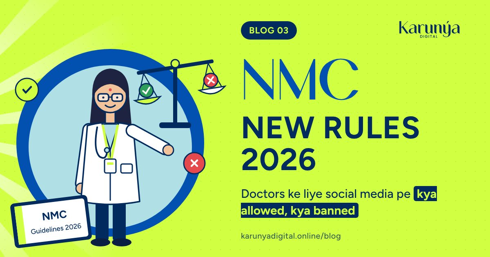

On 6 October 2026, the National Medical Commission (NMC) issued its Guidelines on Ethical Advertising and Public Communication by hospitals/medical institutions and Registered Medical Practitioners. Reports say they came into effect immediately.
If you are a doctor posting on Instagram, YouTube, Facebook or Google, these rules now apply to every post, reel, ad and review reply. This guide explains them in plain language, so you can keep building your presence without risking your registration.
This is a simplified summary based on published news reports of the guidelines. It is not legal advice. Always read the official NMC document for exact wording.
The big idea in one line
Educate, don't advertise. Sharing accurate health information is welcome. Promoting yourself, soliciting patients or making claims you cannot prove is not.
What is now clearly banned
| Practice | Why it matters |
|---|---|
| Patient testimonials for promotion | A doctor "shall not request or share patient testimonials". Patient consent does not make a testimonial acceptable. |
| Fake, paid or manipulated reviews | Buying, soliciting, filtering or manipulating reviews, ratings, likes or followers is prohibited. |
| "Best doctor", "100% success", "guaranteed cure" | Superlatives and guarantees that cannot be objectively verified are not allowed. |
| Before-and-after photos and success rates | Not allowed for promotion. Cases can be shared only for scientific or educational purposes, anonymised and with consent. |
| Celebrity or influencer endorsements | Testimonials and endorsements by patients, celebrities, employees or influencers to promote services are prohibited. |
| AI-made promotion | AI-generated promotional campaigns for commercial interest are banned. AI must never be used to create a patient's image, voice, testimonial or outcome. |
| Discounts, coupons, free procedures | Inducements that push unnecessary consultations, tests or treatment are banned. Factual fee disclosure is allowed. |
| Fear-based content | Content that creates panic or unnecessary demand for tests and procedures is not allowed. |
| Gaming rankings | Manipulating search rankings, algorithms or paid rankings on platforms is prohibited. |
What you can still do (and should)
- Health education content. Explaining a condition, symptoms to watch for, when to see a doctor, myths vs facts. The guidelines allow educational content and public awareness, as long as it does not promote your personal practice or solicit patients.
- Formal announcements. Starting a practice, changing address, change in type of practice, temporary absence, resuming practice and public declaration of charges.
- Talks and media. Lectures on public health on TV, radio or electronic media, in your own name and designation.
- Patient education material in your clinic, without guarantees or superiority claims.
- Greetings on national days or medical days, without advertising.
- Factual hospital information. Hospitals can share objective, verifiable facts: departments, facilities, emergency services, accreditation and fees. A hospital website can list its doctors with qualifications, specialities, registration details and availability.
Does using an agency protect the doctor?
No. The guidelines say publishing through an agency, influencer or platform does not by itself protect the doctor or hospital. You are responsible for content you authorised, commissioned, sponsored or knowingly permitted.
That's why your agency should know these rules as well as you do. At Karunya Digital, every script is written for education first and goes to the doctor for approval before it is posted.
What about Instagram reels?
Reels are still one of the best ways for patients to understand you before they meet you. The difference is the angle:
| Instead of this | Do this |
|---|---|
| "Best gynaecologist in Meerut, book now" | "5 signs of PCOS most women ignore" |
| A patient thanking you on camera | You explaining a common patient question in simple words |
| "100% success IVF" | "What happens in each step of IVF, explained simply" |
| Before-and-after knee photos | "How to protect your knees after 40: 3 daily habits" |
| AI avatar talking for you | Your own face and voice (label any AI-assisted element) |
Patients follow doctors who make them feel understood. Educational reels do exactly that, and they keep you on the right side of the rules.
What are the penalties?
As reported, the penalties are graded:
- First violation: warning and mandatory ethics training
- Second violation: censure and monetary penalty
- Third violation: suspension of registration for 3 to 6 months
- Serious violations (such as misleading cure claims, patient inducement or mass digital solicitation): suspension for 6 to 12 months
- Repeated violations: removal from the medical register for 1 to 3 years
Hospitals are dealt with under the Clinical Establishments Act or the relevant state law. There is a show-cause and appeal process.
A 15-minute self-check for your profiles
Go through your Instagram, Facebook, YouTube and Google profile today:
- ✅ Remove or archive patient testimonial posts and reels
- ✅ Remove before-and-after photos and "success rate" posts
- ✅ Change "best", "top", "No. 1" and "guaranteed" in your bio and captions
- ✅ Remove offer banners such as "free consultation" or discounts
- ✅ Stop any review-request campaign, and never buy reviews or followers
- ✅ Label any AI-assisted visuals, and remove AI avatars or synthetic patient stories
- ✅ Keep your bio factual: name, qualifications, speciality, clinic timings, contact
- ✅ Brief your team and agency, in writing, on these rules
Frequently asked questions
Are doctors banned from social media now? No. Social media is not banned. Educational, accurate and non-promotional content is allowed and encouraged.
Can I post patient videos if the patient gives written consent? Not for promotion. The guidelines say consent alone does not make a testimonial or promotional patient story acceptable.
Can patients still review me on Google? Yes. Genuine reviews that patients leave on their own are not the problem. Soliciting, buying, filtering or manipulating reviews is.
Can I run Meta or Google ads? Sponsored and targeted content counts as advertising. Individual doctors should avoid ads that promote their practice or solicit patients. Hospitals can share factual institutional information. When in doubt, take advice before spending.
Can I use AI to make my reels? AI tools for editing are fine, but AI-generated promotion for commercial interest is banned, and AI-generated content must be labelled. Never use AI to create a patient's face, voice or story.
Need a second pair of eyes?
If you are unsure whether your current posts are safe, start with our free Google and Instagram check. Or message us on WhatsApp and we will tell you, honestly, what to keep and what to remove.
Sources: Medical Dialogues, The South First, Medbound Times.